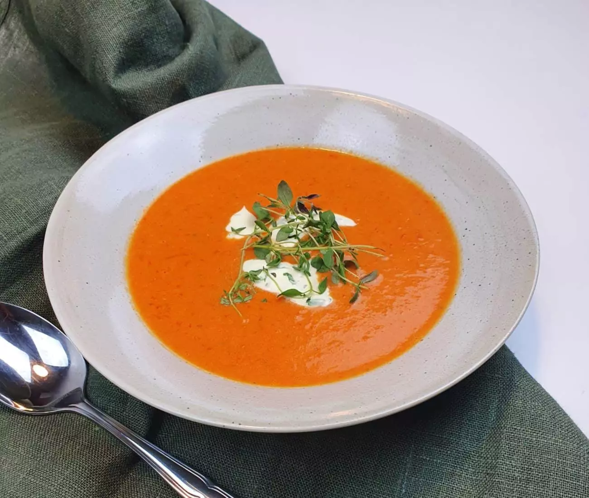

Rostad paprika- och tomatsoppa
 4 portioner
4 portioner-
 Matinspo
Matinspo

- 3 st Paprika röd
- 400 g Körsbärstomater
- 2 st Vitlöksklyftor
- 1 st Schalottenlök
- Balsamico
- Olivolja
Rosta i ugnen 200°C 25 minuter.
- 3 dl Grönsaksbuljong
Mixa grönsakerna. Späd med buljong till önskad konsistens.
- 1 dl Vispgrädde
- 1 tsk Strösocker
- Salt
- Peppar
Koka med grädde en stund och smaka av.
- Creme fraiche
- Basilika
- Bröd
Servera med basilikakräm och gott bröd.